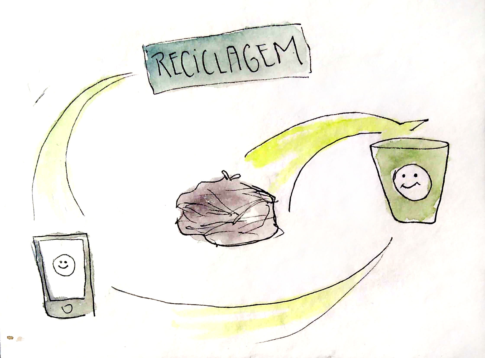
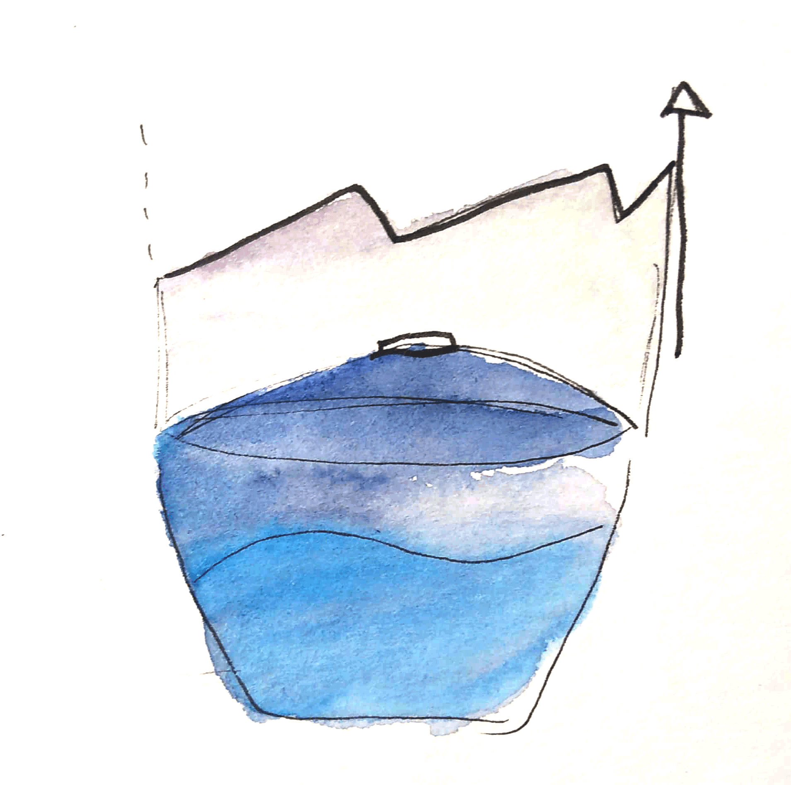

10 carte

Com a motivação de que apenas 7% do lixo é reciclado na cidade de São Paulo, o projeto propõe uma solução para o problema da reciclagem utilizando uma lixeira inteligente. Com redes neurais e deep learning a lixeira por meio de códigos hash é uma resposta de gamificação ao descarte do usuário.
Jujuntos

Dentro da área de educação, o projeto explora a dficuldade de alunos compreenderem os conteúdos de primeira e segunda série. A solução é um bot que com inteligencia artficial que consegue ensinar tais conteúdos com base no conhecimento existente de cada criança de uma maneira lúdica e efetiva.
IOágua

Projeto que visa o empoderamento de usuários em gerenciar seus consumos de água e construir aparatos que visem a medição. A partir de pequenos utensílios eletrô̂nicos o usuário pode ter o controle da quantidade de água que há na caixa d’água.
Kedalion

Projeto que visa o empoderamento de cadeirantes e propõe uma solução que projeta diferentes rotas para cadeirantes utilizando o google maps. O foco é dar liberdade para cadeirantes conseguirem escolher se irão pegar uma rota mais difícil ou mais fácil dependendo de seu tempo hábil.
Smartblue

Para resolver problemas de mobilidade ligados a utilização da zona azul por carros o projeto propõe a automatização do serviço. Com uma camera a solução permite mapear a disponibilidade de vagas na cidade como também a venda de dados para outras empresas.